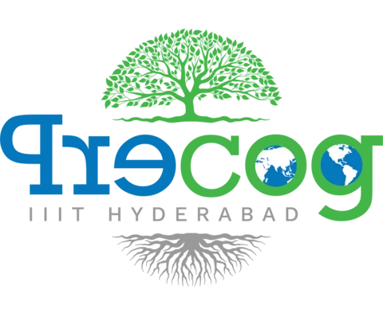
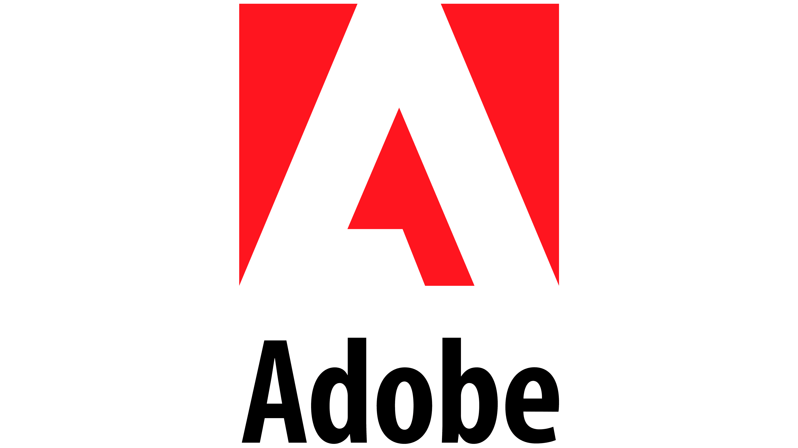
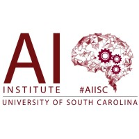

Experience

Undergraduate Researcher
Precog Lab | Hyderabad, India
May 2023 - Present
- Working under the guidance of Dr. Ponnurangam Kumaraguru.
- Working on evaluating the robustness and security of AI systems.

Research Intern
Adobe Research | Bengaluru, India
May 2025 - Aug 2025
- Worked under Balaji Vasan Srinivasan and Aishwarya Agarwal in the Multimodal Content Group.
- Worked on real-time intelligent suggestions for graphic design, addressing key usability pain points through dynamic user-actions.
Research Intern
Microsoft Research India | Bengaluru, India
Jan 2025 - May 2025
- Worked with Tanuja Ganu, Aditya Kanade and Akshay Nambi to evaluating the robustness of varous multi-agent frameworks various adversarial attacks.
- Work under review at NeurIPs D&B track 2025.

Student Research Collaborator
AI Institute, University of South Carolina | Remote
July 2023 - Aug 2024
- Worked with Dr. Amitava Das on assesing the robustness of AI-Generated text detection methods for Hindi Text.
- Work accepted at EMNLP Findings 2024.